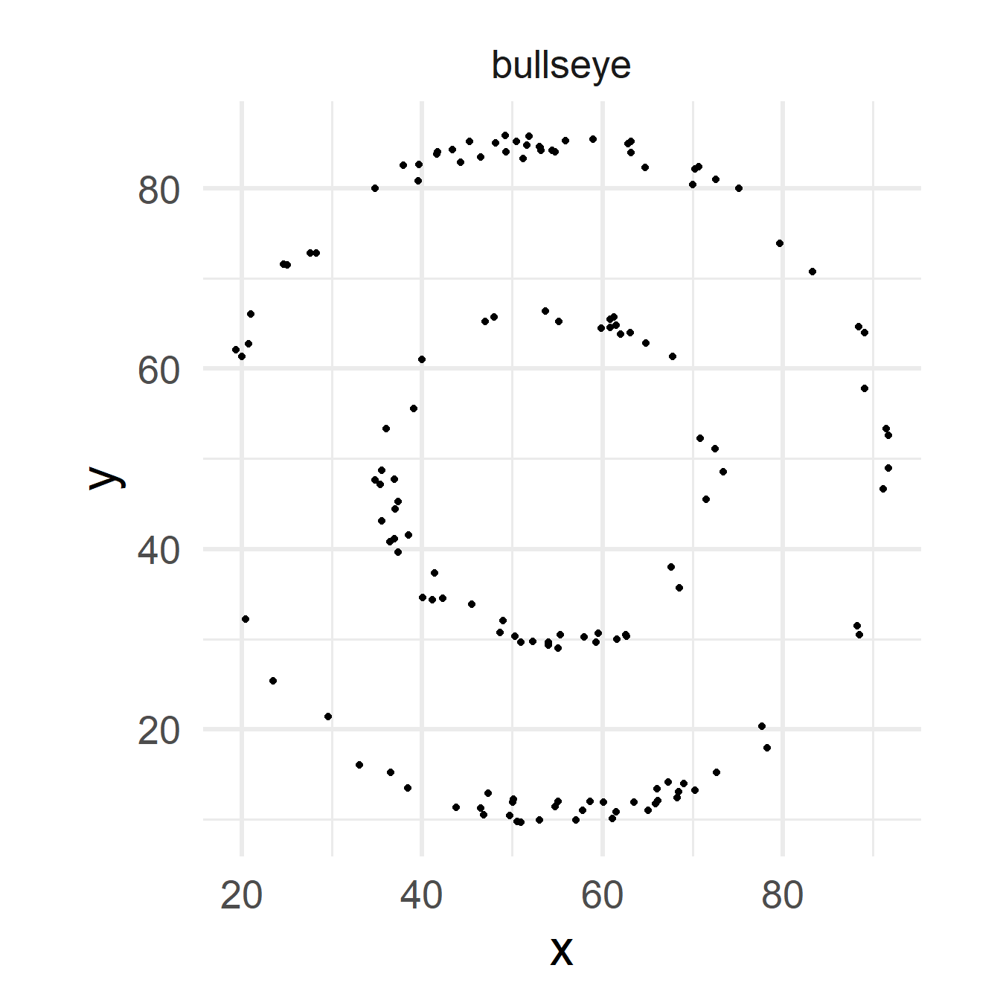
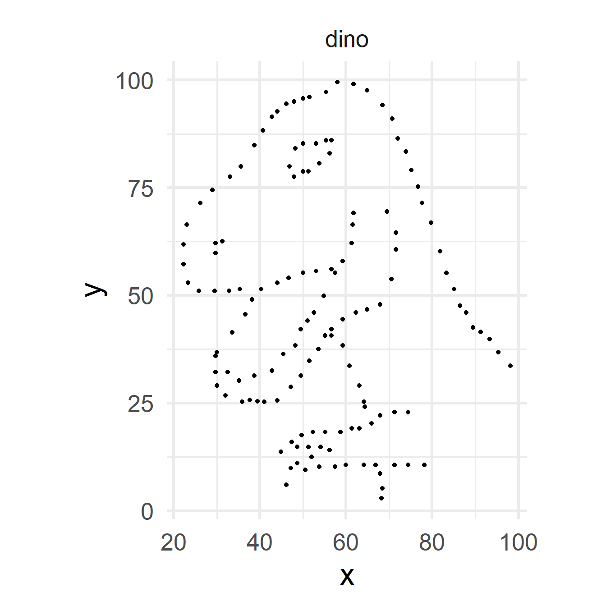
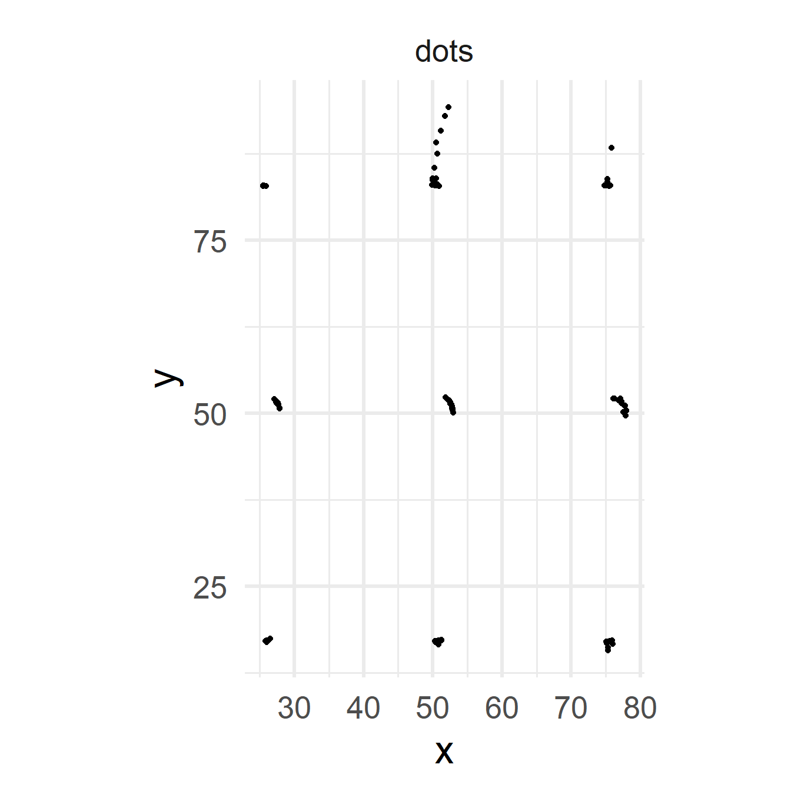
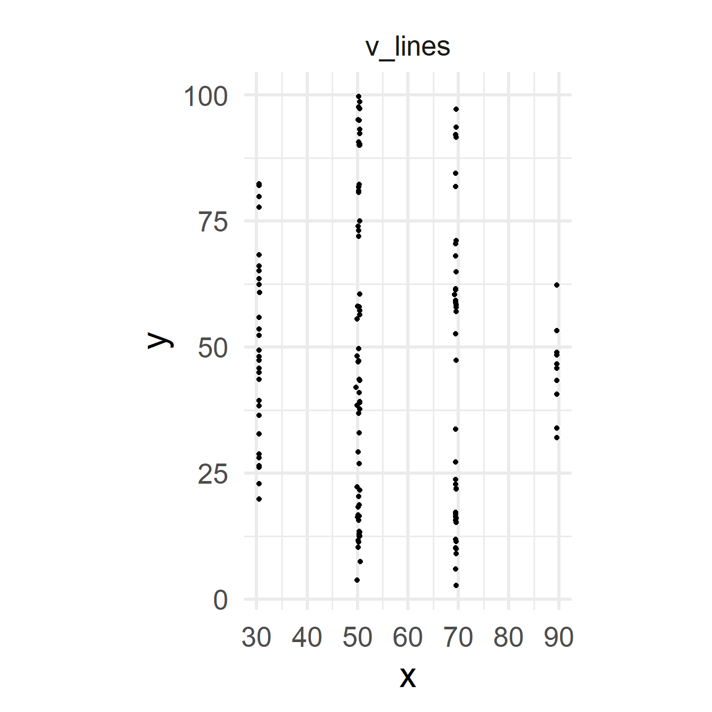
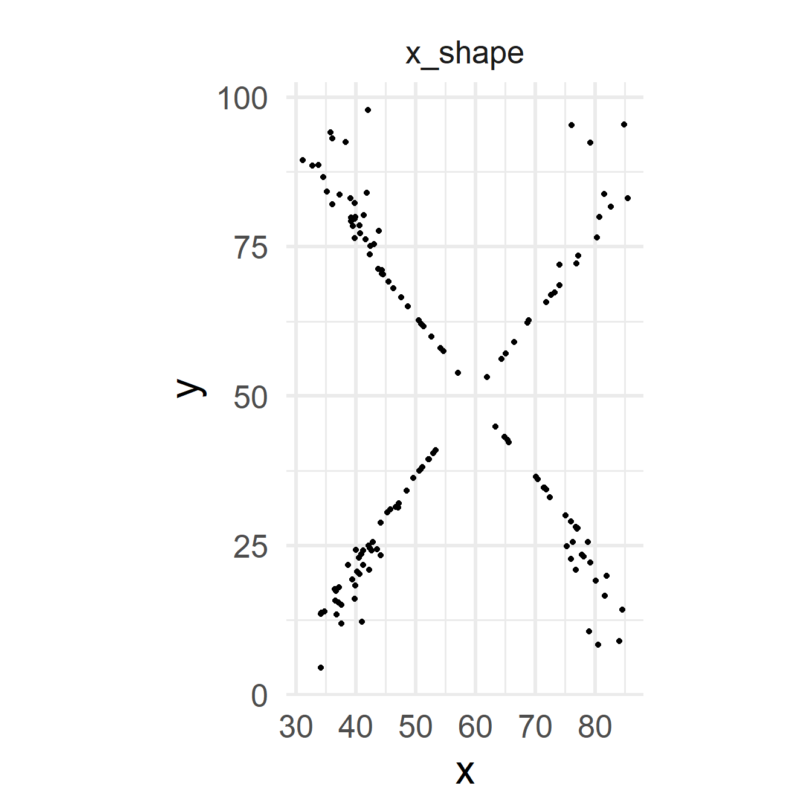
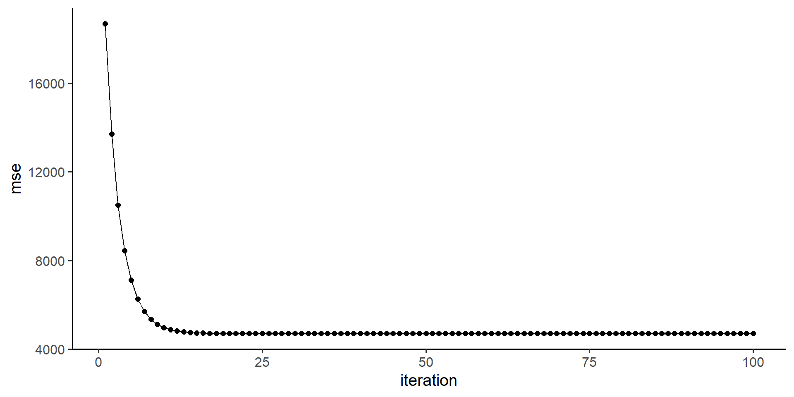

Characteristic |
N = 8 1 |
|---|---|
| vec | |
| 1 | 1 (13%) |
| 2 | 1 (13%) |
| 3 | 1 (13%) |
| 4 | 1 (13%) |
| 5 | 1 (13%) |
| 6 | 1 (13%) |
| 7 | 1 (13%) |
| 8 | 1 (13%) |
| Freq | |
| 1 | 7 (88%) |
| 2 | 1 (13%) |
| ratio_total | |
| 0.111111111111111 | 7 (88%) |
| 0.222222222222222 | 1 (13%) |
| 1
n (%) |
|
Data Crunching
AI

Classic Measures
Central Tendency
Mean
Median
comparison of mean and median
Measures of Spread
Standard deviation and variance
Interquartile Range
Measures for Categoricals
Mode and Frequencies
Ratios
Beware of summarized Data
| dataset | mean_x | mean_y | std_dev_x | std_dev_y | corr_x_y |
|---|---|---|---|---|---|
| away | 54.266 | 47.835 | 16.770 | 26.940 | −0.064 |
| bullseye | 54.269 | 47.831 | 16.769 | 26.936 | −0.069 |
| circle | 54.267 | 47.838 | 16.760 | 26.930 | −0.068 |
| dino | 54.263 | 47.832 | 16.765 | 26.935 | −0.064 |
| dots | 54.260 | 47.840 | 16.768 | 26.930 | −0.060 |
| h_lines | 54.261 | 47.830 | 16.766 | 26.940 | −0.062 |
| high_lines | 54.269 | 47.835 | 16.767 | 26.940 | −0.069 |
| slant_down | 54.268 | 47.836 | 16.767 | 26.936 | −0.069 |
| slant_up | 54.266 | 47.831 | 16.769 | 26.939 | −0.069 |
| star | 54.267 | 47.840 | 16.769 | 26.930 | −0.063 |
| v_lines | 54.270 | 47.837 | 16.770 | 26.938 | −0.069 |
| wide_lines | 54.267 | 47.832 | 16.770 | 26.938 | −0.067 |
| x_shape | 54.260 | 47.840 | 16.770 | 26.930 | −0.066 |









Algorithms
MapReduce
Single Node Architecture
Cluster Architecture
Google has an estimated 1M servers http://bit.ly/Shh0RO
SERVERS!!!
Large Scale Computing
- Challenges:
- How do you distribute computations?
- How can we make it easy to write distributed programs
Machines fail:
- One Server may stay up 3 years (1000 days)
- If there are 1000 servers, expect to loose 1/day
- Google estimate: 1M servers \(\rightarrow\) 1000 machines fail EVERY DAY
Issue and Solution
- Issue: Copying data over a network takes time
- Idea
- Bring computation close to the data
- Store files multiple times for reliability
- MapReduce adresses these problems
- Elegant way to work with big data
- Storage Infrastructure - File System (Google: GFS, Hadoop: HDFS)
- Programming Model: MapReduce
(D)istributed (F)ile (S)ystem
- Chunk servers
- File is split into contiguous chunks
- Typically each chunk is 16-64MB
- Each chunk replicated (usually 2x or 3x)
- Try to keep replicas in different racks
Chunk Servers
Theory
Classroom
We will simulate MapReduce in the classroom
- step: 4 students count the words in the raw data. Time is ticking.
- step: 2 groups are formed, the words are counted. One student acts as the reduce (collecting the counts in the end). Time is ticking.
- step: 4 groups are formed, the words are counted. One student acts as the reduce (collecting the counts in the end). Time is ticking.
- step: 5 groups are formed, the words are counted. One student acts as the reduce (collecting the counts in the end). Time is ticking.
- step: 10 groups are formed, the words are counted. One student acts as the reduce (collecting the counts in the end). Time is ticking.
- step: 20 groups are formed, the words are counted. One student acts as the reduce (collecting the counts in the end). Time is ticking.
Classroom Evaluation
- Which method took the longest?
- What was the most balanced method?
- Would more “servers†help?
using Software


Dealing with Failures
- Map worker failure
- Map tasks completed or in-progress at worker are reset to idle
- Reduce workers are notified when task is rescheduled on another worker
- Reduce worker failure
- Only in-progress tasks are reset to idle
- Reduce task is restarted
- Master failure
- MapReduce task is aborted and client is notified
How many MapReduce jobs?
\(M\) map tasks, \(R\) reduce tasks
Rule of thumb:
- Make \(M\) much larger than the number of nodes in the cluster
- One DFS chunk per Map is common
- Improves dynammics load balancing and speeds up recovery from worker failures
Usually \(R\) is smaller than \(M\)
- Because output is spread across \(R\) files
MapReduce summary
- MapReduce is significant for its role in enabling the processing of massive datasets efficiently across distributed computing clusters.
- It revolutionized big data processing by providing a scalable and fault-tolerant framework for handling large-scale computations.
- Its simplicity and scalability made it accessible to a wide range of industries and applications, from web search engines to scientific research.
- MapReduce paved the way for the development of other big data processing frameworks and technologies, influencing the evolution of distributed computing paradigms.
- Its impact extends beyond its original implementation, as concepts and principles from MapReduce have influenced the design of subsequent systems and architectures for big data processing.
Gradient Descent
Use Cases: General
Machine Learning: Used to train models like neural networks, improving accuracy by minimizing error functions.
Deep Learning: Vital for optimizing complex neural network architectures in tasks like image recognition and natural language processing.
Reinforcement Learning: Enables agents to learn optimal strategies by updating policies or value functions in interaction with environments.
Optimization Problems: Applies to various domains, including physics, engineering, finance, and healthcare, to minimize costs or maximize utility functions.
Computer Vision: Key for training convolutional neural networks to classify objects, detect features, and segment images accurately.
Finance and Economics: Helps in financial modeling, algorithmic trading, and risk management by optimizing trading strategies and pricing financial instruments.
Healthcare and Biology: Utilized in drug discovery, genomic analysis, and medical image analysis to optimize models for diagnosis and treatment planning.
Use Cases: Statistical Learning
Parameter Estimation: Used in maximum likelihood and maximum a posteriori estimation to find model parameters that best fit observed data.
Regression: Employed in linear and logistic regression to minimize errors between observed and predicted values.
Regularization: Implements L1 and L2 regularization to prevent overfitting in models.
Dimensionality Reduction: Utilized in PCA and factor analysis to reduce data dimensionality while preserving information.
Clustering: Optimizes objective functions in k-means and Gaussian mixture models for better cluster formation.
Survival Analysis: Estimates parameters in survival models like Cox proportional hazards model for analyzing time-to-event data.
The idea
The loss function - formulation
- The loss function is at the heart of the gradient descent algorithm. We start with linear regression.
\[\begin{align} Y(x_i) = \theta_0 + \theta_1 x_i \end{align}\]
- The loss function needs to be differentiable and convex, which is satisfied for the MSE.
\[\begin{align} J(\theta_1,\theta_0) = \overbrace{\frac{1}{N}\sum_{i=1}^N(y(x_i)-y_i)^2}^{MSE} \end{align}\]
The loss function - partial derivative
In order to solve for the parameters we do some math and geht the partial derivatives:
\[\begin{align} \frac{\partial \text{MSE}}{\partial \theta_0} &= -\frac{2}{n} \sum_{i=1}^n (y_i - \hat{y}_i) \\ \frac{\partial \text{MSE}}{\partial \theta_1} &= -\frac{2}{n} \sum_{i=1}^n (y_i - \hat{y}_i) x_i \end{align}\]
\(\theta_0\) and \(\theta_1\) are then iteratively updated:
\[\begin{align} \theta_0 &\leftarrow \theta_0 - \alpha \frac{\partial \text{MSE}}{\partial \theta_0} \\ \theta_0 &\leftarrow \theta_0 + \alpha \left( \frac{2}{n} \sum_{i=1}^n (y_i - \hat{y}_i) \right)\\ \theta_1 &\leftarrow \theta_1 - \alpha \frac{\partial \text{MSE}}{\partial \theta_1}\\ \theta_1 &\leftarrow \theta_1 + \alpha \left( \frac{2}{n} \sum_{i=1}^n (y_i - \hat{y}_i) x_i \right) \end{align}\]
The learning rate \(\alpha\)
- Hyperparameter
- scales the gradient, influencing how model parameters are adjusted
Classroom

Algorithm
\begin{algorithm} \caption{gradient descent} \begin{algorithmic} \Require cost function $J(\theta)$, learning rate $\alpha$, number of iterations $n$ \State $i \gets 0$ \State random $\theta$ \Procedure{GradientDescent}{$J(\theta),\theta, \alpha, n$} \For{$i$ \To $n$} \For{$j = 1$ \To number of training examples $m$} \State \textbf{Compute gradient of $J$ wrt $\theta$} \State gradient = $\nabla J(\theta, x^j, y^j)$ \State \textbf{Update the parameters $\theta$:} \State $\theta = \theta - \alpha \times gradient$ \EndFor \EndFor \EndProcedure \end{algorithmic} \end{algorithm}
Simulation
\[\begin{align} Y(x_i) = \theta_0 + \theta_1 x_i \end{align}\]
The data

core functions and parameters
gradient_desc <- function(theta_0, theta_1, x, y){
N = length(x)
pred <- theta_1*x + theta_0
res <- y - pred
delta_theta_0 <- (2/N)*sum(res)
delta_theta_1 <- (2/N)*sum(res*x)
return(c(delta_theta_0, delta_theta_1))
}
minimize_function <- function(theta_0, theta_1, x, y, alpha){
gd <- gradient_desc(theta_0, theta_1, x, y)
d_theta_0 <- gd[1] * alpha
d_theta_1 <- gd[2] * alpha
new_theta_0 <- theta_0 + d_theta_0
new_theta_1 <- theta_1 + d_theta_1
return(c(new_theta_0, new_theta_1))
}
alpha <- 0.1
iter <- 100optimization
mse vs. iteration
the models

different learning rates

References

Copyright Prof. Dr. Tim Weber, 2024